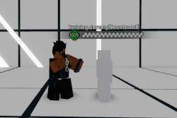
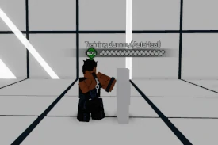
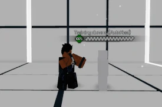

Khalan Zielinski, or more widely known as Assailant is a Duelist class aligned with the Corruption faction. Unarmed and clad with broken shackles, Assailant specializes in capitalizing on opportunity and punishing enemy openings with his extensive combo potential. Although cumbersome and complex to most beginners, Assailant yields a high skill ceiling, and has an answer for nearly every situation. If he's oblivious, good hunting. If he's competent, good luck.
A martial artist who survived the Swarm's influence through his superior desire for a worthy foe. During the Great War, he fought alongside fellow corrupted (including Revenant) in an aims to perfect his arts and pursue the path of strength. His power became a great danger to the forces of Purity -- so great, in fact, that the first wielder of the great Akatsumagi was called to freeze his heart, so that he might finally be contained. There, the warrior lay in stasis until Aominoa's heart began beating once more at Lunargalade, gifting him the energy to escape. Though weakened by his recently thawed heart, the warrior sought out Akatsumagi's current wielder over the next fifteen years for a rematch. Unfortunately, during a run-in with some Phantom goons, the warrior was incapacitated by R.A.W.A.N. #01 before being taken prisoner. Now, having grown tired of constantly being locked away, the warrior liberates himself once again in order to exact his revenge on all who have dishonored him. As reinforcements picked up the pieces left in his wake, Phantom authorities would know him as... the Assailant.
When Assailant lands a counterhit, he will apply the (-) Movement decreased debuff onto the opponent once the combo ends, lowering their walkspeed by 6 ws. This debuff does not stack.
(Ground) - Assailant concentrates a swathe of corruption into his heel, and crushes the opponent with an overhead axe kick to the skull. Inflicts knockdown. Has Lv. 1 Armor Break.
(Ground) - Assailant performs two kicks, raising his opponent up into the air. When this move is used outside of a combo, the opponent is knocked away by a few studs. If this move is used during a combo, or this move successfully counter hits, then this will initiate a combo. Utilizes a hard magnet.
4 inputs, 161 damage, A Scaling
4 inputs, 242 damage, C Scaling
